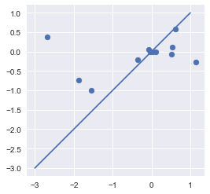

Exercise 3.15
import pandas as pd
import numpy as np
import seaborn as sns
import matplotlib.pyplot as plt
import statsmodels.formula.api as smf #statsmodels is a Python module for statistics
import statsmodels.api as sm
from sklearn.datasets import load_boston
%matplotlib inline
boston = load_boston()
df = pd.DataFrame(boston.data, columns=boston.feature_names)
df['MEDV'] = pd.Series(boston.target)
df.head()
| CRIM | ZN | INDUS | CHAS | NOX | RM | AGE | DIS | RAD | TAX | PTRATIO | B | LSTAT | MEDV | |
|---|---|---|---|---|---|---|---|---|---|---|---|---|---|---|
| 0 | 0.00632 | 18.0 | 2.31 | 0.0 | 0.538 | 6.575 | 65.2 | 4.0900 | 1.0 | 296.0 | 15.3 | 396.90 | 4.98 | 24.0 |
| 1 | 0.02731 | 0.0 | 7.07 | 0.0 | 0.469 | 6.421 | 78.9 | 4.9671 | 2.0 | 242.0 | 17.8 | 396.90 | 9.14 | 21.6 |
| 2 | 0.02729 | 0.0 | 7.07 | 0.0 | 0.469 | 7.185 | 61.1 | 4.9671 | 2.0 | 242.0 | 17.8 | 392.83 | 4.03 | 34.7 |
| 3 | 0.03237 | 0.0 | 2.18 | 0.0 | 0.458 | 6.998 | 45.8 | 6.0622 | 3.0 | 222.0 | 18.7 | 394.63 | 2.94 | 33.4 |
| 4 | 0.06905 | 0.0 | 2.18 | 0.0 | 0.458 | 7.147 | 54.2 | 6.0622 | 3.0 | 222.0 | 18.7 | 396.90 | 5.33 | 36.2 |
(a)
print("{:>9} {:>22} {:>24}".format("predictor", "coef","pvalue"))
coefs = {}
predictors = [c for c in list(df) if c not in ["CRIM"]]
for predictor in predictors:
model = 'CRIM ~ ' + predictor
res = smf.ols(formula = model, data=df).fit()
# http://www.statsmodels.org/devel/generated/statsmodels.regression.linear_model.RegressionResults.html
print("{:>9} {:>22} {:>24}".format(predictor, res.params[predictor],res.pvalues[predictor]))
coefs[predictor] = [res.params[predictor]]
predictor coef pvalue
ZN -0.07352128504760275 6.151721643267655e-06
INDUS 0.5068466125328721 2.444137454620807e-21
CHAS -1.8715451282984525 0.21434357527851233
NOX 30.9752586128881 9.159490025915888e-23
RM -2.6910453263732346 5.838093667798685e-07
AGE 0.10713083068208369 4.2590641745370265e-16
DIS -1.542831118235415 1.2688320361261509e-18
RAD 0.6141366715916436 1.6206052887449367e-55
TAX 0.0295625570653893 9.759521193159848e-47
PTRATIO 1.1446126207906333 3.8751218902071097e-11
B -0.03553454597446588 1.4320876785176315e-18
LSTAT 0.5444063736854577 7.124777983462517e-27
MEDV -0.3606473433413291 2.0835501108140565e-19
The list above indicates that every predictor except CHAS has a statistically significant association with CRIM at the 1% level. We now plot every predictor against the response with the regression line from the fit.
plt.figure(figsize=(20, 20))
for i, predictor in enumerate(predictors):
model = 'CRIM ~ ' + predictor
res = smf.ols(formula = model, data=df).fit()
plt.subplot(5,3,i+1)
plt.xlabel(predictor)
plt.ylabel("CRIM")
plt.scatter(df[predictor], df['CRIM'])
plt.plot(df[predictor], res.fittedvalues, color='red')

(b)
all_columns = "+".join([c for c in list(df) if c not in ["CRIM"]])
model = " CRIM ~ " + all_columns
res = smf.ols(formula = model, data=df).fit()
print(res.summary())
OLS Regression Results
==============================================================================
Dep. Variable: CRIM R-squared: 0.448
Model: OLS Adj. R-squared: 0.434
Method: Least Squares F-statistic: 30.73
Date: Fri, 08 Dec 2017 Prob (F-statistic): 2.04e-55
Time: 09:51:22 Log-Likelihood: -1655.7
No. Observations: 506 AIC: 3339.
Df Residuals: 492 BIC: 3399.
Df Model: 13
Covariance Type: nonrobust
==============================================================================
coef std err t P>|t| [0.025 0.975]
------------------------------------------------------------------------------
Intercept 17.4184 7.270 2.396 0.017 3.135 31.702
ZN 0.0449 0.019 2.386 0.017 0.008 0.082
INDUS -0.0616 0.084 -0.735 0.463 -0.226 0.103
CHAS -0.7414 1.186 -0.625 0.532 -3.071 1.588
NOX -10.6455 5.301 -2.008 0.045 -21.061 -0.230
RM 0.3811 0.616 0.619 0.536 -0.829 1.591
AGE 0.0020 0.018 0.112 0.911 -0.033 0.037
DIS -0.9950 0.283 -3.514 0.000 -1.551 -0.439
RAD 0.5888 0.088 6.656 0.000 0.415 0.763
TAX -0.0037 0.005 -0.723 0.470 -0.014 0.006
PTRATIO -0.2787 0.187 -1.488 0.137 -0.647 0.089
B -0.0069 0.004 -1.857 0.064 -0.014 0.000
LSTAT 0.1213 0.076 1.594 0.112 -0.028 0.271
MEDV -0.1992 0.061 -3.276 0.001 -0.319 -0.080
==============================================================================
Omnibus: 662.271 Durbin-Watson: 1.515
Prob(Omnibus): 0.000 Jarque-Bera (JB): 82701.666
Skew: 6.544 Prob(JB): 0.00
Kurtosis: 64.248 Cond. No. 1.58e+04
==============================================================================
Warnings:
[1] Standard Errors assume that the covariance matrix of the errors is correctly specified.
[2] The condition number is large, 1.58e+04. This might indicate that there are
strong multicollinearity or other numerical problems.
Inspecting the t-statistics and p-values from the table above indicates that we can reject the null-hypothesis at the 1% level for every predictor except DIS and RAD.
(c)
for pred in coefs:
coefs[pred].append(res.params[pred])
plt.scatter([coefs[pred][0] for pred in coefs], [coefs[pred][1] for pred in coefs])
plt.plot([-5,35],[-5,35]) # plot y=x
plt.gca().set_aspect('equal', adjustable='box')
plt.show()

plt.scatter([coefs[pred][0] for pred in coefs if pred != "NOX"], [coefs[pred][1] for pred in coefs if pred != "NOX"])
plt.plot([-3,1], [-3,1]) # plot y=x
plt.gca().set_aspect('equal', adjustable='box')
plt.show()

for pred in coefs:
print("{:>9} {:>22} {:>24}".format(pred, coefs[pred][0], coefs[pred][1]))
ZN -0.07352128504760275 0.04491938833833456
INDUS 0.5068466125328721 -0.06157595914315758
CHAS -1.8715451282984525 -0.7414350725371193
NOX 30.9752586128881 -10.645499846398824
RM -2.6910453263732346 0.3810702287184484
AGE 0.10713083068208369 0.0020113635247448122
DIS -1.542831118235415 -0.994991753906636
RAD 0.6141366715916436 0.5888381693758202
TAX 0.0295625570653893 -0.0037457234762569955
PTRATIO 1.1446126207906333 -0.2787310489008303
B -0.03553454597446588 -0.0068551485297145675
LSTAT 0.5444063736854577 0.12126930458422257
MEDV -0.3606473433413291 -0.1992178026131782
As can be seen from the two plots and table above there's a reasonable correlation between the coefficients of the individual and multiple regressions, except for a couple of outliers (namely, NOX, and perhaps PTRATIO if we try to "fit" the line y=x).
However, since we can only reject the null hypothesis for DIS and RAD, the other values are not very meaningful. We would also expect them to differ significantly between the individual and multiple regression case, since in the former the coefficient is the average change in the response from a unit change in the predictor completely ignoring the other predictors. In the latter case, the coefficient is the average change in the response from a unit change in the predictor while holding the other predictor fixed. Because of possible correlations, non-linearities and collinearities between the predictors, there is no expectancy that, in general, the coefficients in each case will be of the same magnitude or sign.
(d)
print("{:>9} {:>22} {:>24}".format("predictor", "coef","pvalue"))
coefs = {}
plt.figure(figsize=(20, 20))
for i, predictor in enumerate(predictors):
model = 'CRIM ~ ' + predictor + " + np.power(" + predictor + ", 2) + np.power(" + predictor + ", 3)"
res = smf.ols(formula = model, data=df).fit()
plt.subplot(5,3,i+1)
plt.xlabel(predictor)
plt.ylabel("CRIM")
plt.scatter(df[predictor], df['CRIM'])
x = np.linspace(min(df[predictor]),max(df[predictor]), 100)
y = res.params[0] + x*res.params[1]+ res.params[2]*(x**2)+ res.params[3]*(x**3)
plt.plot(x, y, color='red')
predictor coef pvalue

print("{:>13} {:>22} {:>22} {:>22} {:>22} {:>22}".format("Pvalues for", "beta_0", "beta_1", "beta_2", "beta_3", "f_pvalue"))
for predictor in predictors:
model = 'CRIM ~ ' + predictor + " + np.power(" + predictor + ", 2) + np.power(" + predictor + ", 3)"
res = smf.ols(formula = model, data=df).fit()
# http://www.statsmodels.org/devel/generated/statsmodels.regression.linear_model.RegressionResults.html
print("{:>13} {:>22} {:>22} {:>22} {:>22} {:>22}".format(predictor, res.pvalues[0], res.pvalues[1], res.pvalues[2], res.pvalues[3], res.f_pvalue))
coefs[predictor] = [res.params[predictor]]
Pvalues for beta_0 beta_1 beta_2 beta_3 f_pvalue
ZN 7.007549102153049e-26 0.002759025816137138 0.09562861334020208 0.23222420001929456 1.493835486494624e-06
INDUS 0.02127779341724847 5.996850336550802e-05 4.530067332031857e-10 1.7044411827492229e-12 3.883757105301397e-32
CHAS 1.8392584982986124e-19 0.2143435752785134 0.2143435752785135 0.2143435752785135 0.21434357527854317
NOX 2.5889952588127288e-11 5.832574000017562e-13 1.522887409265701e-14 1.5877781649655969e-15 1.944006533283078e-37
RM 0.08318387284841824 0.21659351269645624 0.3727454652123774 0.5206758617415794 9.064938181874174e-08
AGE 0.35608818782287965 0.14200846484879873 0.04742487317735903 0.006784649759092411 1.7617378955702614e-20
DIS 2.625993995501171e-30 7.973990285059572e-18 5.55230636339025e-12 1.1612920278009457e-08 6.20393032552023e-35
RAD 0.7687397958579762 0.6248690273355282 0.6147821175450365 0.48510593419963344 1.4667061463067613e-54
TAX 0.10749505285358406 0.11270703155044363 0.14066729321605811 0.24747620662298378 3.6866247874075365e-49
PTRATIO 0.00263349568053505 0.0032336441833622862 0.004384600558546921 0.006674970321795337 5.989427223419224e-13
B 4.087085804886006e-14 0.13513295148754378 0.4474840389744088 0.5086733122770439 7.828704859359701e-17
LSTAT 0.5940911637166147 0.3752691902431662 0.07929438940026551 0.15533172089582745 4.128065320901066e-26
MEDV 1.3488354131610002e-45 5.306129587965229e-28 4.8367172078814855e-18 1.3247686426755871e-12 2.6524355817735603e-58
From the plots and table above, we can find evidence of a non-linear association, cubic type, between INDUS, NOX, AGE, DIS, PTRATIO and MEDV. In general, to get a sense if a non-linear association is present, we can plot the residuals of the linear fit against the fitted values and see if there is a non-linear trend.